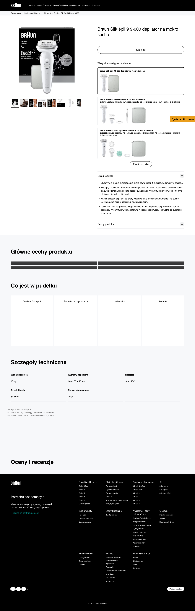

| LP | Etykieta (jak jest) | Typ / rola obiektu | Zawartość / akcje | Obserwacje (→ baza) | P | Pozycja |
|---|---|---|---|---|---|---|
| 1 | Braun | Header / nawigacja | Logo Braun (czarne), mega-menu (Hair Removal, Face, Body Grooming, Oral Care, Personal Care), wyszukiwarka, ikony konta i listy życzeń. | Białe tło; czarne logo Braun; mega-menu z kategoriami urządzeń; brak ikony koszyka (brand site); wyszukiwarka z autosuggest; sticky header; klasa premium electronics brand site. | – | above fold 0px |
| 2 | Epilatory / Silk-épil 9 | Breadcrumbs | Ścieżka: Strona główna / Depilacja / Epilatory / Silk-épil 9 / Silk-épil 9 9-000. | PL breadcrumbs; 5-poziomowa ścieżka (głęboka hierarchia); model number w ścieżce; chevron separator; standard premium brand site. | – | above fold 50px |
| 3 | [galeria + 360°] | Galeria produktu + 360° viewer | Galeria zdjęć urządzenia — packshot na białym tle, miniaturki boczne + ikonka 360° widoku interaktywnego. | Wysoka jakość fotografii; białe tło; 5+ zdjęć; widok 360° jako premium feature (wyróżnik vs pozostałych); zdjęcia akcesoriów w zestawie; lifestyle shot w użyciu; złote akcenty (premium kolory Braun). | – | above fold 80px |
| 4 | Braun Silk-épil 9 9-000 | Tytuł produktu (H1) | H1: Brand + Product Line + Model number. | Brand + model line + model number; brak benefitu w tytule; format premium tech: marka + seria + SKU; "Silk-épil" jako brand equity; nie mówi co robi — zakłada brand awareness; kontrast z GLOV ("Depilator z nano szkła") który benefit-first. | – | above fold 80px |
| 5 | ★★★★★ X opinii | Oceny / gwiazdki | Agregat ocen z Bazaarvoice — gwiazdki + liczba recenzji. | Bazaarvoice widget; wysoka liczba recenzji (duży brand); link do sekcji reviews; gwiazdki half-star lub pełne; duże liczby recenzji = social proof; brak photo reviews widocznych w agregacie. | – | above fold 108px |
| 6 | Rekomendowana cena: XXX PLN | Cena referencyjna | Rekomendowana cena detaliczna — bez możliwości zakupu na stronie producenta. | "Rekomendowana cena" zamiast "Cena" — brand site, nie sklep; najwyższa cena wśród porównywanych (premium segment epilatorów elektrycznych); brak koszyka; PLN widoczne. | – | above fold 130px |
| 7 | Kup teraz / Znajdź sklep | CTA — brand_site_buy_cta | Przycisk "Kup teraz" lub "Znajdź sklep" — redirect do partnerów (Media Expert, RTV Euro AGD, Amazon PL, Allegro). | Czarny przycisk CTA "Kup teraz"; brak koszyka na stronie; kliknięcie otwiera listę autoryzowanych sprzedawców; model analogiczny do Veet ale kanał premium electronics (nie drogeryjny); 2+ kliki do zakupu. | – | above fold 160px |
| 8 | 9x głębiej / Pincety Flex-Adapt / AktywClip | USP highlights / product claims | Rząd 3-4 ikon z kluczowymi claimami produktu bezpośrednio pod CTA. | Ikony + krótkie texty; "9x głębiej niż golenie" jako benchmark claim; tech-specific claims (Flex-Adapt pincets); premium feature names (AktywClip); tło białe; above fold; kontra dla GLOV: korzyści technologiczne urządzenia elektrycznego. | – | above fold 200px |
| 9 | Dlaczego Braun Silk-épil 9? | Sekcja edukacyjna / hero feature | Sekcja z video lub animacją mechanizmu działania epilatora — pincety, głębokość usuwania włosa, gładkość efektu. | Video lub animacja GIF/CSS; wizualizacja pincet w akcji; styl kliniczny/techniczny; tekst edukacyjny o mechanizmie; duża sekcja; buduje zrozumienie i zaufanie do technologii; poziom premium content nieporównywalny z PS/Malowidło. | – | scroll 1 420px |
| 10 | Specyfikacja techniczna | Specyfikacja / tabela tech | Tabela lub lista parametrów: liczba pincet, prędkości, czas ładowania, wodoszczelność IPX, akcesoria w zestawie, zasilanie. | Tabela parametrów; wiersze: Pincety: 40 / Prędkości: 2 / IPX7 wodoszczelny / Czas ładowania: 1h / Czas pracy: 40min; bardzo szczegółowa vs GLOV/Malowidło; premium device = kupujący porównują spec. | – | scroll 1 700px |
| 11 | Co zawiera zestaw | Zawartość zestawu | Grid zdjęć zawartości opakowania — urządzenie + akcesoria: głowice, etui, szczoteczka, adaptery. | Zdjęcia per akcesorium + nazwa; "co dostajesz" sekcja; buduje perceived value zestawu; charakterystyczne dla premium electronics; brak analogicznego elementu u GLOV (nie ma "zestawu" — to jedno urządzenie). | – | scroll 2 950px |
| 12 | Porównaj modele Silk-épil 7 / 9 / 9 Flex | Tabela porównawcza modeli — model_comparison_table | Tabela porównawcza modeli w serii — kolumny: cechy / Silk-épil 7 / Silk-épil 9 / Silk-épil 9 Flex. | Tabela kolumnowa; tick/cross per feature; buduje hierarchię modeli (Silk-épil 9 > 7); upsell do droższego modelu 9 Flex; nieobecna u wszystkich innych konkurentów; typowy Braun/P&G conversion tactic; anchor na "premium" modelu. | – | scroll 2 1250px |
| 13 | Akcesoria / Spare parts | Grid akcesoriów — accessories_grid | Sekcja z akcesoriami do kupienia osobno — zapasowe głowice, etui, szczoteczki, adaptery. | Kafelki akcesoriów z ceną; link do sklepu partnera (brak direct add-to-cart); LTV model — akcesoria kupowane co 3-6 mies.; nieobecny w kategoriach jednorazowych (kremy Veet); nieobecny u GLOV (brak eco-systemu akcesoriów). | – | scroll 3+ 1600px |
| 14 | Opinie (N recenzji) | Recenzje Bazaarvoice | Sekcja recenzji — agregat + lista recenzji ze zdjęciami, filtrowaniem, sortowaniem (Bazaarvoice). | Bazaarvoice widget; duża liczba recenzji (brand awareness); filtrowanie po gwiazdkach; sortowanie; zdjęcia klientów możliwe; recenzje weryfikowane zakupem (u autoryzowanych sprzedawców); syndication z innych regionów. | – | scroll 3+ 1900px |
| 15 | FAQ | FAQ / akordeony | Sekcja FAQ — pytania o użytkowanie, ból, serwis, gwarancję, kompatybilność akcesoriów. | Akordeony; pytania premium-brand specific: gwarancja, autoryzowany serwis, gdzie kupić akcesoria, czas do regrowth; obsługuje post-purchase też; dłuższa sekcja niż u GLOV/Malowidło. | – | scroll 3+ 2300px |
| LP | Etykieta | Typ | Selektor | Tracking | GTM | Dev notes |
|---|---|---|---|---|---|---|
| 7 | Kup teraz | a.buy-now-btn | .buy-now, .cta-buy |
click | GA4: select_item lub custom click | SAP Commerce GTM integration; P&G global tracking; GA4 select_item lub custom click event; otwiera modal lub nowy tab z retailerami. |
| 14 | Reviews | Bazaarvoice | #BVRRContainer, .bv-content-summary |
BV tracking | Bazaarvoice native events | Bazaarvoice third-party widget; own tracking system; syndication z globalnych rynków; PageView + UGC events własne BV. |
| LP | Etykieta | Typ | Komentarz strategiczny |
|---|---|---|---|
| 12 | Tabela porównawcza | model_comparison_table | BRAUN UNICUM: tabela porównawcza modeli to P&G standard (Gillette, Oral-B też). Tworzy "anchor" — shopper widzi Silk-épil 7 vs 9 vs 9 Flex i wybiera środek lub górę. GLOV nie ma analogu (1 produkt). Szansa GLOV: comparison "nano-szkło vs krem vs epilator elektryczny" jako kategorialna alternatywa do tej samej techniki anchor. |
| 3 | Galeria 360° | 360_product_viewer | 360° viewer = premium signals w galerii (dopamine przy interakcji). Tylko Braun w tym porównaniu go ma. Implementacja nie jest droga (Spinware, Sirv, natywny) — GLOV Shopify może łatwo dodać. Efekt: podniesiony AOV i zmniejszony return rate. |
| 7 | CTA | brand_site_buy_cta | Braun + Veet = brand sites bez koszyka. GLOV + Malowidło + LadyMakeup = direct purchase. GLOV ma tutaj MEGA PRZEWAGĘ — zero tarcia zakupowego vs 2-3 kliki extra u Braun/Veet. To powinno być komunikowane w kontekście "łatwość zakupu" jeśli GLOV testuje ads vs Braun. |
